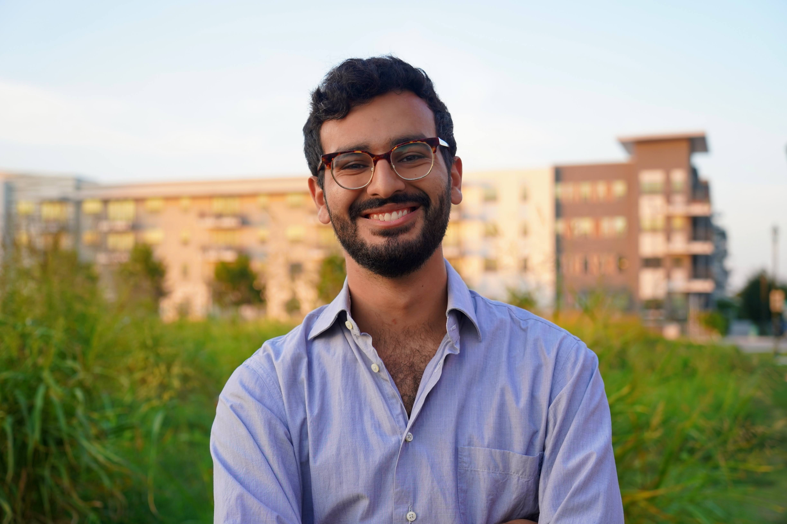

<!---->

Welcome to my blog! This site is a new endeavor for me, and I'm planning to use it as a place to gather my thoughts on things I've learned, have some fun, and hopefully make something that others might find useful. I've never managed a website before, nor have I had much experience writing casually for anyone other than myself, so I imagine there will be some growing pains as I get in the swing of things. But I'm looking forward to exercising this muscle and making something new, and if you the reader find a single thing of use or interest on this site, then I will consider this a resounding success.

But who am I anyway? My name is Bassel Saleh, and I'm currently a PhD student in a sort of blend of applied math, computing, and physics. I'm very much at the start of what I hope is a long career in scientific research, and this is my way of summarizing some of the things I've learned for other young scientists out there trying to find their footing. Because of my background, this blog will focus mostly on mathematics, physics, and computer science, but expect to find a wider variety of content here as well. From other academic interests of mine like history and linguistics to general musings on the work-life balance of being a graduate student, I'm putting no hard limit on what I permit myself to discuss.

Want more info about me? Check out the [About Me](/about/) page.

Curious about the name *Climbing the Giant*? I explain it all in one of my first posts, [Not Knowing](/markdown/2021/05/09/not-knowing.html).

# Posts
